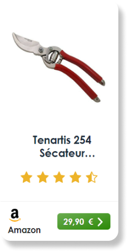
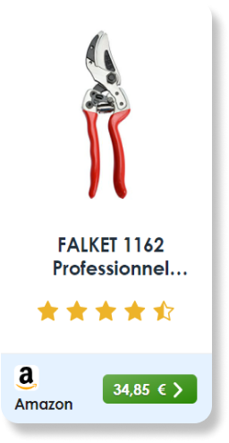
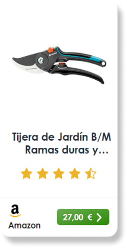
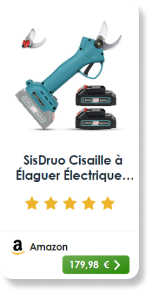
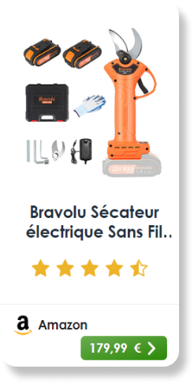
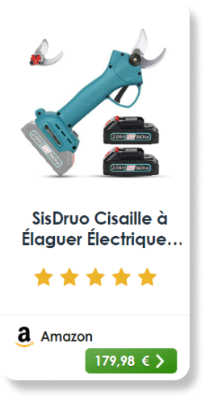
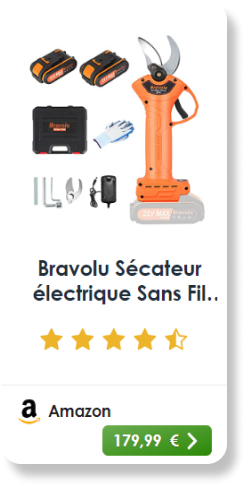

L'OLIVIER

LA TAILLE D'OLIVIER
Les anciens aimaient les grands arbres car ils pensaient que plus l'arbre était important, plus grande
serait la quantité de fruits menée au moulin. Ils laissaient donc l'olivier grandir dans toutes les
directions. Ils avaient quand même remarqués que la fructification se faisait principalement sur les
parties retombantes des rameaux (penduliers).
Comment tailler un olivier ? : Les différentes tailles de l'olivier selon sa destination.
Table des matières
1. L'olivier de production :
2. L'olivier d'ornement
3. Quand tailler un olivier ?
4. Matériel pour la taille de
l'olivier
L’olivier de production :
Comme tous les arbres fruitiers, l'olivier est régulièrement taillé. Il peut être taillé toute l'année,
mais les mois de mars, avril et mai sont les mois de la taille, entre les risques de gel et la floraison.
L'olivier est un arbre qui nécessite une taille annuelle. Il faut discerner les tailles favorisant la
production de fruits et la taille purement esthétique.
Les tailles concernant la production comprennent la taille de formation,
la taille de fructification et la taille de reprise.
Taille de formation sur le jeune arbre, a pour but de former un monotronc en éliminant les aches afin de renforcer la ligne centrale. Quand le jeune olivier atteint 1.50m, il convient de lui iner une forme équilibrée et rationnelle pour son exploitation.
Lutte contre la mouche de l'olive : le piegeage
La taille de reprise ou de régénération, généralement sévère, se pratique pour rénover un arbre devenu improductif par vieillissement ou négligence. On ramène donc la végétation à un volume plus faible et plus ramassé près du tronc.
L'olivier d'ornement :
La taille de l'olivier d'ornement est un acte subjectif à la base car l'olivier est principalement
destiné à la production d'olives.
La taille d'un olivier destiné à l'ornement se rapproche de la taille de formation de l'olivier de
production.
Le but de la taille est d'obtenir une charpente équilibrée formant au choix une sorte de gobelet
destiné à aérer la frondaison, une boule à l'aspect décoratif ou tous autres styles donnants à
l'arbre sa propre place dans votre espace vitale.
Quand tailler un olivier ?
La Taille est traditionnellement effectuée en fin d'hiver (fin février, début mars et en avril) et ce
tous les ans afin de respecter le cycle végétatif qui se fait sur deux ans. Il vous reste ensuite à lui
donner la forme qui vous conviendra le mieux.
Mais on dit toujours... ce qui plait à l'oeil, plait à la nature.
Une fois la taille effectuée vous aurez besoin d'un broyeur de végétaux pour réduire au maximum
les déchets et réutiliser sous forme de compost les branches taillées
Broyage des branches d'olivier
Matériel pour la taille de l'olivier
• Un sécateur manuel est indispensable .Voici notre sélection de sécateurs de qualité :



• Ou un sécateur électrique si vous avez beaucoup d'oliviers à tailler
 




OLIVIER

OLIVES

TAURISME

LIVRES A LIRE